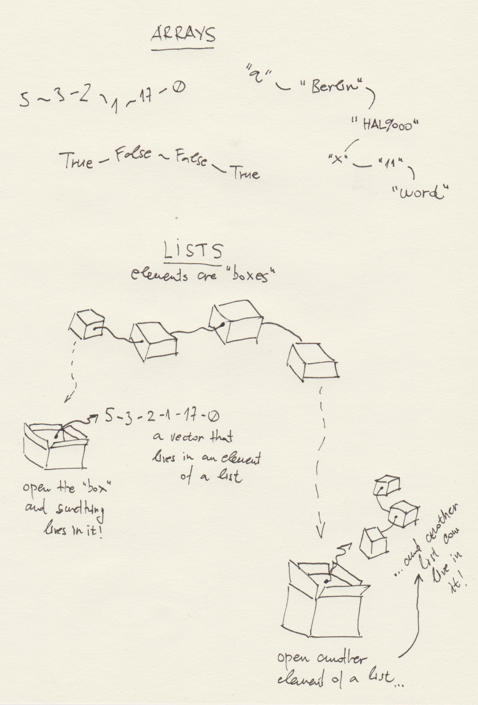
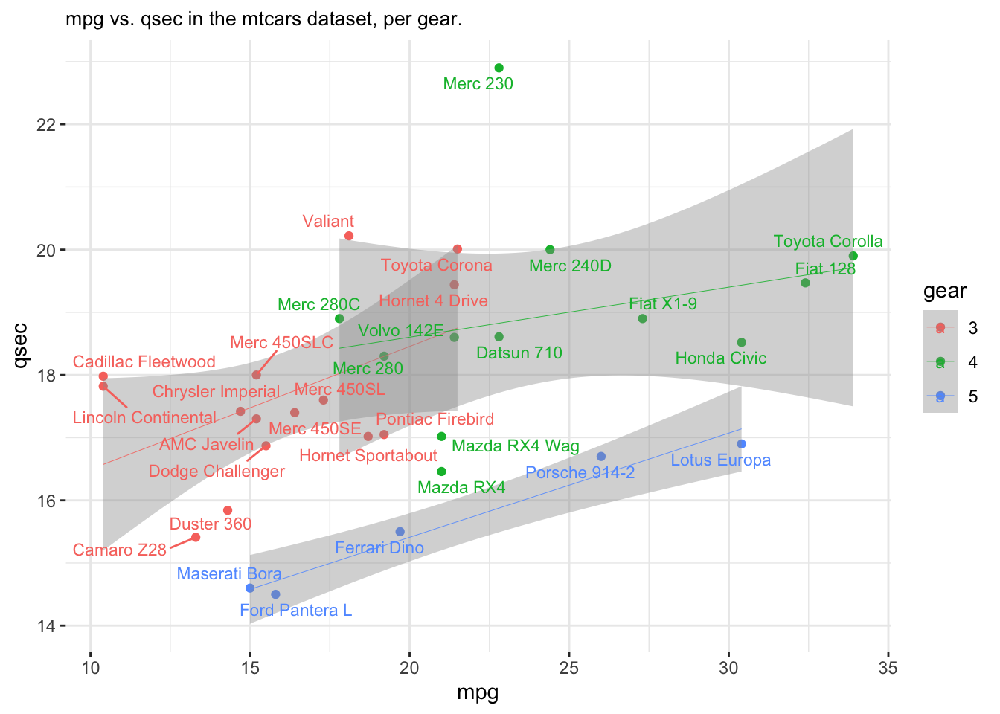

Session01 Intro to R and The Shape of Things to Come
Goran S. Milovanovic, PhD

Session 01: Feeling R: Basics + Intuitive Understanding of R
Welcome to R!

What do we want to do today?
Our goal in Session 01 is to develop and intuition of R,
and a feeling for the programming language R. Yes, we need to
work on our emotions, dear students. Because programming in Data Science
- as well as programming in general - is nothing but communication, and
a very specific one. Programming languages are not very tolerant in the
way they communicate with us: for example, they demand that we be very
upfront and straightforward, and they have no tolerance for ambiguity.
If they do not understand something that we say, they will immediately
respond with a cold - and at first cryptic - error message. That means
that we need to be very patient while we learn the strict rules of
communication with machines in Data Science and elsewhere. I guarantee
you that there is a specific emotional state, a specific state of mind,
that accompanies the focused work of any programmer and Data Scientist.
It is a kind of calmness coupled with a good, very good intuition about
the nature of the programming language they use. This is our goal: we
need to start developing our intuition about R. How does R like to
work?
0. Prerequisits.
None. There is an R console open in front of your eyes and you can reach your machine’s keyboard.
1. Navigating the work environment: where am I?
Everything happens in folders (or directories - simply pick the term of your preference), right? Say, we want to write our first R program - a script, as it is usually called. That program will consist of a set of lines in the programming language R, and those lines will be telling to our machine what to we want from her. Ok, this set of lines - a script - needs to live somewhere. It needs to live in some directory on your computer’s disk.
When we work in R, there is always something called a working
directory. There is a function in R - think of it as a
free R program that you already have upon installing this programming
language - that will let you know what is your current working
directory. If you write any R code and decide to save it for later use,
and do not specify the directory where you want it to live, R will use
your current working directory as a destination folder. That function is
getwd()
getwd()## [1] "/Users/goransm/Work/___DataKolektiv/__freeDataKolektiv/_devsify"Note. As you can see, the file paths in R are a bit
different that those that you are used to see on the Windows operative
system (but exactly the same as those we have on Linux). R will use
/ to define paths, while Windows uses the backslash -
\ - instead. Your RStudio IDE takes care that these paths
are compatible so there is nothing you need to worry about (for
now).
The output of getwd() should end with
01_IntroDataScience_Non-Tech/_Code if you have opened the
course RStudio project exactly as suggested in the beginning of this
session. What comes before
01_IntroDataScience_Non-Tech/_Code is the path on your
local filesystem (i.e. your machine) where you have cloned the course
repository.
Now, let’s learn about the contents of our current working directory:
list.files(getwd())## [1] "_data" "_devsify.Rproj"
## [3] "_site" "_site.yml"
## [5] "01_think_together_dkserver.png" "02_explore_possibilities_dkserver.png"
## [7] "03_training_dkserver.png" "04_wikidata_dkserver.png"
## [9] "about.html" "about.Rmd"
## [11] "academic.png" "AdvAnalyticsR2024_Banner.jpeg"
## [13] "aleksandar_cvetkovic_introMLpython.jpg" "aleksandar_cvetkovic_introMLpython.png"
## [15] "AleksandarNarancic175.png" "AleksandarPanovski175.png"
## [17] "analysttraining.png" "businesstraining.png"
## [19] "cdf.png" "ContinuousProbability.jpeg"
## [21] "DataScienceSessions.jpg" "devsify_DK_logo.png"
## [23] "devsify_GSM500px__Banner.png" "DK_Logo_100.png"
## [25] "DK_Logo_400.png" "DK_logo_horizontal.png"
## [27] "DK_Logo_White_150.png" "DK_Logo_White_NoTitle_25.png"
## [29] "dkmlconfpalic2023.png" "dkserver_consulting.jpg"
## [31] "dkserver_courses_CustomRTraining.jpg" "dkserver_courses_DSSV1.jpg"
## [33] "dkserver_courses_IntroDataManagement.jpg" "dkserver_courses.jpg"
## [35] "dkserver_wikidata.jpg" "DSCEurope2021.png"
## [37] "dscEurope2022_BDTTechTutorial.png" "DSCEurope2022_panel.png"
## [39] "dsceurope2023.png" "dss_vol05_python2023_500px.png"
## [41] "DSS_Vol06_Py_Banner_OPENED_02.png" "dss03python2023_banner500px.png"
## [43] "dss04python2023_banner500px.png" "DSS05_2023_srb.png"
## [45] "dsss2022_courses.jpg" "dsss2022_header.jpg"
## [47] "dssvol06_py_banner.jpeg" "eRum2018.png"
## [49] "eRum2020.png" "favicon.png"
## [51] "filipinterviewInstitutZaFiziku.jpg" "footer.html"
## [53] "foundationaltraining.png" "freeDK_Expectations.png"
## [55] "freeDK_Organization.png" "freeDK_Program.png"
## [57] "freeDK_Rules.png" "freeDK_TechStack.png"
## [59] "Full_GPT_architecture.png" "github.png"
## [61] "goran_milovanovic_introMLpython.jpg" "goran_milovanovic_introMLpython.png"
## [63] "GSM_Krakow2024_invert.jpg" "GSM_Krakow2024.jpg"
## [65] "gsm_round_175px.png" "Hallucination_CronenbergStereo.png"
## [67] "header.html" "HeikeThomys175px.jpg"
## [69] "HipkonLajt2020.png" "igf_identifying_the_impact.png"
## [71] "IlijaLazarevic175px.jpg" "index.html"
## [73] "index.Rmd" "InspiraHub2023Meetup.png"
## [75] "instagram.png" "IntroMLPython_Head_eng.png"
## [77] "IntroMLPython_Head.png" "JelisavetaMilovanovic175px.jpeg"
## [79] "l01_lists.html" "l01_lists.Rmd"
## [81] "linkedin.png" "Logo-2C-21px-TM.png"
## [83] "machinery.png" "media.html"
## [85] "media.Rmd" "MilanoR2019.png"
## [87] "MilicaDjurkovic175px.jpg" "MilovanMinic175px.jpeg"
## [89] "MilovanovicVreme.jpg" "MLSS03_ConvexFunctions.png"
## [91] "MLSS03_NeuralNetwork.png" "MLSS03_WebPage_Notebook_Banner.png"
## [93] "MLSS03_WebPageBanner.png" "n00_installations.html"
## [95] "n00_installations.Rmd" "n00_intro_session.html"
## [97] "n00_intro_session.html.R" "n00_intro_session.R"
## [99] "n00_intro_session.txt.R" "n01_intro_session.R"
## [101] "n01_introR_session.R" "n03_functional.html"
## [103] "n03_functional.Rmd" "n04_more_functional.html"
## [105] "n04_more_functional.Rmd" "NedaRadibratovic175px.jpg"
## [107] "Netokracija2023.png" "NetokracijaIntervju2023.png"
## [109] "PE_banner_2024.png" "PE_GeneralBanner.png"
## [111] "PE_GeneralBanner02_web.png" "PE_GeneralBanner02.png"
## [113] "PE_GeneralBannerDecember2023.png" "PE_sep2023.png"
## [115] "prerequisites.html" "prerequisites.nb.html"
## [117] "prerequisites.Rmd" "prob.png"
## [119] "RadmilaVelickovic175px.png" "RadovanSimikic175px.jpg"
## [121] "regression_mle.png" "renv"
## [123] "renv.lock" "resources.html"
## [125] "resources.Rmd" "Rlogo.png"
## [127] "s00_installations.html" "s00_installations.Rmd"
## [129] "S01_01_Functions.jpeg" "S01_02_Arrays_and_Lists.jpeg"
## [131] "s01_introduction_to_r.nb.html" "s01_introduction_to_r.Rmd"
## [133] "S02_01_DataFrames.jpeg" "s02_dataframe.Rmd"
## [135] "S03_01_FunctionalProgramming.jpeg" "s03_functional.Rmd"
## [137] "S04_01_RProgramming.jpeg" "s04_more_functional.Rmd"
## [139] "s05_EDA.Rmd" "s06_Probability.Rmd"
## [141] "S07_01_ProbabilityFunctions.jpeg" "S17_01_ROC.jpeg"
## [143] "S17_02_LikelihoodFunction.jpeg" "S21_01_RandomForest.jpeg"
## [145] "S22_01_Bias-Variance_Tradeoff.jpeg" "session00_logos.png"
## [147] "site_libs" "sitelinks1.jpg"
## [149] "sitelinks2.jpg" "sitelinks3.jpg"
## [151] "sitelinks4.jpg" "skc_kahneman_delfi_2015.jpg"
## [153] "startit_add_dsss2022_800.jpeg" "StartitMeetup2016_InfRetreival.png"
## [155] "StartitMeetup2016.png" "talasAI.png"
## [157] "twitter.png" "undp_machinery2023.jpg"
## [159] "UvodR_startit_banner.jpg" "video.Rmd"
## [161] "VladimirMijatovic175px.jpg" "wd_thinkpad_official.png"
## [163] "webit2023.jpeg" "WikidataCon2019.png"
## [165] "WikidataCon2021.png" "wikimediablog2018.jpg"Take a look at list.files(getwd()) carefully. We have
already learned that getwd() is an R function. That
function takes no input, and returns one
output: the path towards the current working directory.
Now, list.files(getwd()) composes two R functions:
getwd() is the first one, and list.files() is
the second one. The later takes one input - that being
the results of getwd() - and returns one
output, namely the list of files found in the directory on the
path returned by a previous getwd() call. In programming, R
represents and instance of something called a functional
programming language. Right now, this means very little to you,
so we can simply say just the following: you will be using a tons of
functions in R and combine them in crazy ways. And that is why it is
important to develop an intuition about functions since the very
beginning.
WARNING. I can code, but I cannot draw. This is how I envision functions and their composition:

Ok, list.files(getwd()) returned a list of
files found under our working directory that we have in turn
obtained from getwd(). There is more: we know that the
current working directory is
getwd()## [1] "/Users/goransm/Work/___DataKolektiv/__freeDataKolektiv/_devsify"and now we ask: what is found in
C:/Users/goran/___DataKolektiv/__EDU/01_IntroDataScience_Non-Tech/_Code/,
the directory right above our current working directory where we find
the .Rmd R Notebook file (the one that we are now
using)?
# THIS IS A COMMENT: This chunk of code makes use of the `list.files()` R function
list.files('/Users/goransm/Work/___DataKolektiv/_EDU/DSSVol01_IntroRNonTech2021-22/_Code/IntroDataScience_NonTech_S01')## [1] "IntroDataScience_NonTech_S01.nb.html" "IntroDataScience_NonTech_S01.Rmd"
## [3] "session01.R"Ok, we find one file (e.g. _Code.Rproj) and many
directories (img,
IntroDataScience_NonTech_S00,
IntroDataScience_NonTech_S01, etc.). Now, imagine I want to
work in
C:/Users/goran/___DataKolektiv/__EDU/01_IntroDataScience_Non-Tech/_Code/
instead of working in:
getwd()## [1] "/Users/goransm/Work/___DataKolektiv/__freeDataKolektiv/_devsify"How does one change a working directory in R? We have a function (of course) to do that:
setwd('/Users/goransm/Work/___DataKolektiv/_EDU/DSSVol01_IntroRNonTech2021-22/_Code/IntroDataScience_NonTech_S01')Now, we need to be very careful because we are working from R
Markdown: type getwd() in the console and take a look at
its output. Now execute the following chunk of R code here:
getwd()## [1] "/Users/goransm/Work/___DataKolektiv/__freeDataKolektiv/_devsify"So, nothing changed. The moral of the story: changing a directory
inside an R Markdown code chunk will change the working
directory only until the code in the chunk executes, but it will not
change the working directory for any subsequent chunks. If we did this
in a console, or in an R script - and both are different from executing
the code from an R Markdown Notebook - once called, setwd()
would change the working directory until something else changes it
again. That is why R Markdown complained after out setwd()
call.
2. Functions? Variables? Hello, World.
Let’s learn something about the in-built functions R. Those are the R functions - again, think of them simply as pieces of R code that does something - that are placed under your availability as soon as you have installed R. Also, we need to start learning about variables and their corresponding types in R.
You know the famous Hello, World. message in
programming? Typically an exemplar of someone’s first code in a newly
discovered programming language… Let’s try:
Hello, World.Well, that didn’t work. How about:
print('Hello, World.')## [1] "Hello, World."And here it is. Ok, 'Hello, World.', and what about:
"Hello, World."? (Mind the difference, please)
print("Hello, World.")## [1] "Hello, World."So, strings in R (technically called:
characters) can be encompassed by ' or
" whatsoever: it’s the same. However, It is a good manner
of coding practice to choose which one will you use and be consistent in
that decision. Note: use " wherever
possible.
Wait, 'Hello, World.' are two words, right:
word1 <- "Hello"
word2 <- "World"
print(word1)## [1] "Hello"print(word2)## [1] "World"Ok, that is not what we wanted, but let’s learn a few things. We have
instantiated one variable in R, word1, and then another
one, word2. By using the R assignment operator -
<- - we have assigned the character value of
"Hello" to word1 and the value of
"World" to word2. Then we have called the
function print() twice to print out the values of the two
variables.
NOTE. You can use = as an assignment
operator in R, of course, try: word = "Hello", for example.
However, we do not do it by convention in R: we prefer to use
the <- assignment operator. Use =
instead and you will easily confuse any mature R programmer that you
eventually need to work with. Don’t do it.
Let’s get closer to the result that we were looking for:
word1 <- "Hello"
word2 <- "World"
paste(word1, word2, sep = ", ")## [1] "Hello, World"Close. We need an . at the end, so let’s try:
word1 <- "Hello"
word2 <- "World"
paste(word1, word2, ".", sep = ", ")## [1] "Hello, World, ."and that is not it, right? Right. We need to start learning something
about the logic of R functions like paste() that puts
strings together, obviously. First question, how many arguments
did we pass to paste() in
paste(word1, word2, ".", sep = ", ")?
Answer: four (4) arguments. Let’s see: word1 is the
first, word2 the second, now, full stop, ., is
the third, and finally the value for the separator, sep
which we have set to ", ", is the fourth.
paste() functions by putting together all its first, string
arguments, separating them by the value of the sep
argument. But we didn’t need a full stop placed between
word1 and word2! What we do?
We call paste() twice:
word1 <- "Hello"
word2 <- "World"
paste(
paste(word1, word2, sep = ", "),
"."
)## [1] "Hello, World ."Almost. What we do not like is the empty space between the end of
word2 and .:
word1 <- "Hello"
word2 <- "World"
paste(
paste(word1, word2, sep = ", "),
".",
sep = ""
)## [1] "Hello, World."What have we learned: that the sep argument of
paste has a default value of " " - an
empty space. Only when we have explicitly instructed
paste() to use sep = "" - an empty string -
the results was what we have looked for. As I told you: programming
languages are very strict when it comes to communication, they have
their inner rules and logic, and one needs to learn and understand that
logic completely (or almost completely) to be in full command of a
programming language. Also, we have learned that some arguments in some
R functions have default values: if we do not specify a value
of the argument that we want to use, the function will use its default
value.
2. Lists, arrays, and a bit more complicated functions.
What R functions have we seen thus far? Let’s see:
print(), paste(), list.files(),
getwd(), setwd(). There are tons of them, I
assure you. Take a look at this one, for example:
word <- 'Hello World'
strsplit(word, split = " ")## [[1]]
## [1] "Hello" "World"Ok, the meaning of strsplit() is, obviously
string split, and it somehow breaks the strings in pieces,
obviously using the split argument to learn what separator
do we want to use to decompose a string, but… But the output looks
strange, doesn’t it?
What is [[1]], and why does the result follows only
after it and an additional [1]? This is so because
strsplit() returns a list, which is a very
important data type in R. Things in R - call them variables - have a
data type associated. A thing can be an integer, or a real number, or
perhaps a string (again, that data type is called character
in R)… But they can also be a bit more complicated, like arrays
and lists. Now, let’s start with lists, very important in R.
What is a list?
word <- 'Hello World'
s <- strsplit(word, split = " ")
class(s)## [1] "list"Yes, I have assigned the output of
strsplit(word, split = " ") to s, and then
used the class() function to ask for a data type of
s - and it is a list indeed. Let’s
print(s):
print(s)## [[1]]
## [1] "Hello" "World"Again! But, what if …
print(s[[1]])## [1] "Hello" "World"Interesting. Here is what is happening:
sis a list of length one, which means that it has only one element;- that first element of
sis found by using the [[1]] index; for lists, the index is always placed in double square brackets:[[and]], like in:s[[1]]; - then there is the
[1] "Hello" "World"and that is an array - which we can also call a vector - of length two (because it has two elements,HelloandWorld), and[1]is simply the index of the first element of that array.
This can all sound really complicated at this point, but it is really not. Let’s now start moving one step at the time.
mySequence <- 1:100
print(mySequence)## [1] 1 2 3 4 5 6 7 8 9 10 11 12 13 14 15 16 17 18 19 20 21 22 23
## [24] 24 25 26 27 28 29 30 31 32 33 34 35 36 37 38 39 40 41 42 43 44 45 46
## [47] 47 48 49 50 51 52 53 54 55 56 57 58 59 60 61 62 63 64 65 66 67 68 69
## [70] 70 71 72 73 74 75 76 77 78 79 80 81 82 83 84 85 86 87 88 89 90 91 92
## [93] 93 94 95 96 97 98 99 100Demystifying the [1] part of the strsplit()
output - the one for which I’ve explained that is the index of the first
element in the array composed of two following elements:
"Hello" and “World”:
- by
mySequence <- 1:100I have created an array, a sequence of numbers from 1 to 100, using the:operator in R; by assignment<-that sequence becomes the value of the variablemySequence; - the
print(mySequence)line is self-explanatory, and - from the output we can see that the indices found under square
brackets (single! - they are array indices, not list indices) are simply
the ordinal numbers of the first element of the
mySequencearray in each row of the output - nothing more than that.
That is exactly what happens in the [1] "Hello" "World"
part of the output. Now, about those double square brackets,
[[ and ]] that are used in lists; take a look
at this:
myList <- list()
myList[[1]] <- 1:10
myList[[2]] <- 11:20
myList## [[1]]
## [1] 1 2 3 4 5 6 7 8 9 10
##
## [[2]]
## [1] 11 12 13 14 15 16 17 18 19 20Does it make more sense now? The myList list encompasses
two arrays, and those two arrays have indices [[1]] and
[[2]], of course. So we use [[ and
]] to index lists in R, and [ and
] to index arrays. To illustrate, again, with more
numbers:
myList <- list()
myList[[1]] <- 1:100
myList[[2]] <- 101:200
myList## [[1]]
## [1] 1 2 3 4 5 6 7 8 9 10 11 12 13 14 15 16 17 18 19 20 21 22 23
## [24] 24 25 26 27 28 29 30 31 32 33 34 35 36 37 38 39 40 41 42 43 44 45 46
## [47] 47 48 49 50 51 52 53 54 55 56 57 58 59 60 61 62 63 64 65 66 67 68 69
## [70] 70 71 72 73 74 75 76 77 78 79 80 81 82 83 84 85 86 87 88 89 90 91 92
## [93] 93 94 95 96 97 98 99 100
##
## [[2]]
## [1] 101 102 103 104 105 106 107 108 109 110 111 112 113 114 115 116 117 118 119 120 121 122 123
## [24] 124 125 126 127 128 129 130 131 132 133 134 135 136 137 138 139 140 141 142 143 144 145 146
## [47] 147 148 149 150 151 152 153 154 155 156 157 158 159 160 161 162 163 164 165 166 167 168 169
## [70] 170 171 172 173 174 175 176 177 178 179 180 181 182 183 184 185 186 187 188 189 190 191 192
## [93] 193 194 195 196 197 198 199 200Do you now understand how list and array indices are used in the R output?
WARNING. My drawing, again: this is how I envision the difference between lists and arrays in R.

Let me try to explain:
- arrays encompass only elements of the same data type: numbers, characters, logicals, etc.;
- I envision arrays as elements that are directly related to each other, “chained” to follow one another;
- lists, on the other hand, I envision as a chain of boxes, and each box can contain anything irrespective of what is found in other boxes;
- I need to unpack a box - i.e. access an element of list by
[[and]]- to find out what is in a box, and I can find various arrays living there; - Also, something that we will begin to study very soon: a box can live inside a box. In other words: a list can be an element of another list. We call them nested lists in R.
I have used a previously unused function in this Notebook:
list(). There are R functions that are meant to create
variables of a certain data type, and list() is one of
them:
a <- list()
a## list()What is a?
class(a)## [1] "list"Of course. What else can I create?
a <- numeric()
a## numeric(0)Ok, it is a numeric type of length(0). Now:
a <- numeric(5)
a## [1] 0 0 0 0 0Now this is an array, or a vector if you like (a
and one-dimensional vector, to be precise), of length 5: it has five
elements, all 0 valued as per default.
Wait:
a <- character(5)
a## [1] "" "" "" "" ""Ok, the empty string "" is the default for creating
character arrays with character(). I’ve been mentioning the
word length for a while. Look:
a <- c(1, 2, 3)
length(a)## [1] 3Now we understand the R function length(): tell me how
many elements there are in an array. NOTE. The
c() function, of the most commonly used things in R, puts
thing together in an array. Nothing else.
But why do we have lists and arrays: both seem to be collections of things that are indexed? Here is the fundamental difference:
- arrays can contain data that all must be of the same type, while
- lists can put up together just anything.
The serious game of R data types begins now.
3. Elementary truths about data types in R
Look:
myArray1 <- c(1,2,3,4)
myArray2 <- c(1,"2",3,4)
print(myArray1)## [1] 1 2 3 4print(myArray2)## [1] "1" "2" "3" "4"What? What has just happened? Well, to understand what happened, you
need to keep in your mind the fact that R arrays can encompass only
elements of the same data type. The first one - myArray1 -
is not problematic: it encompasses only things of integer
(or numeric in R, as you will see) type. But the second
one, myArray2 is strange: we produced it by combining three
numbers (1, 2, and 3), and one
character type ("2"; never forget, writing out a
number to a computer, like 2, means you want to use a
number, while writing out something quoted, like "2" means
you want to use a character, a string, a text - and that is not the
same). What did R do? As we can see from the output:
[1] "1" "2" "3" "4" - R has converted
everything to a character type. So, two things to remember:
(1) R automatically does type conversion, so for example when it sees
you trying to put together numbers and characters, it will default to
convert everything to characters, and (2) some data types are “older”
than the others, for example character is obviously “older”
than numeric since R did not try to convert
"2" to a number (as you might have expected) but in turn
decided to convert 1, 2, and 3 to
characters. You will get use to this, don’t worry.
But what if we wanted R to understand that by
myArray2 <- c(1,"2",3,4) we mean numbers? Then:
myArray2 <- as.numeric(c(1,"2",3,4))
print(myArray2)## [1] 1 2 3 4So, if we want to override R’s implicit,
automatic type conversion, which implies that numbers
will be automatically converted to characters and not vice versa, we
need to instruct R that we want an explicit type
conversion by using the appropriate function, as.numeric()
in this case.
For example:
logic <- c(0,1,1,0)
as.logical(logic)## [1] FALSE TRUE TRUE FALSEWhat have we learned: there is a data type called
logical in R (also known as Boolean), and it can
take only two values: TRUE and FALSE
(note: always capitalized in R). So, 1 is
always TRUE, while 0 is always
FALSE, right? No:
logic <- c(0,3,1,0)
as.logical(logic)## [1] FALSE TRUE TRUE FALSEWhen converting numbers to logicals in R, 0 is always
FALSE. Try as.logical(-4), or
as.logical(3.14) to make sure.
Now, what if we want to maintain a collection of data of various types? Then lists come into play:
myList <- list(1, 2, "3", 4)
print(myList)## [[1]]
## [1] 1
##
## [[2]]
## [1] 2
##
## [[3]]
## [1] "3"
##
## [[4]]
## [1] 4Now:
- the list has four elements:
[[1]],[[2]],[[3]], and[[4]]; - each element contains an array of length one:
1,2,"3", and4, and - their data types are:
class(myList)## [1] "list"Oh, no, class() returned the data type of the whole
list! R has functions - a very important and powerful set of functions
indeed - to work with lists. Look:
lapply(myList, class)## [[1]]
## [1] "numeric"
##
## [[2]]
## [1] "numeric"
##
## [[3]]
## [1] "character"
##
## [[4]]
## [1] "numeric"lapply() is an R function that (1) for a given function
as its second argument (class() in this example) (2)
returns a result of that function’s call, taking each element of its
first argument - which is a list, myList in our example -
as the respective function’s input, and (3) returns a result as a list
of the length equal to the length of the input list.
Let’s experiment to understand lapply(), a function of
extreme importance in R programming, better:
myList <- list(1, 2, "3", 4)
lapply(myList, as.numeric)## [[1]]
## [1] 1
##
## [[2]]
## [1] 2
##
## [[3]]
## [1] 3
##
## [[4]]
## [1] 4So, lapply() called as.numeric() on each
element in myList and returned a converted value.
Again:
myList <- list(1, 2, "3", 4)
lapply(myList, as.character)## [[1]]
## [1] "1"
##
## [[2]]
## [1] "2"
##
## [[3]]
## [1] "3"
##
## [[4]]
## [1] "4"And again for as.logical:
myList <- list(1, 2, "3", 4)
lapply(myList, as.logical)## [[1]]
## [1] TRUE
##
## [[2]]
## [1] TRUE
##
## [[3]]
## [1] NA
##
## [[4]]
## [1] TRUEWait, what is the NA value in [[3]]? The
third element of the myList list is a character,
"3". We asked lapply() to apply
as.logical() to all members of myList. It did
well for the numbers (all positive, so all TRUE), but it
failed for "3" which is a character - and R does not know
how to treat a character value under as.logical - should it
be TRUE or FALSE. Since a conversion of that
kind is not defined in R, it returned NA, short for
Not Available. You will see NA used a lot in
Data Science in R, anytime the value is, for some reason,
missing.
4. Our own R functions
Remember how it started: I’ve told you that you should think of R
functions simply as collections of R code that does something for us.
For example, repetitive things: there is something that can be done with
data, but the data can vary while what can be done to it remains the
same - and then we need a function. It is a piece of code that always
does one and the same thing over it inputs: the things that we
pass to it. Say, we pass 3 and 4 to some R
function called muFun() and we want to it to return the
result of 3+4, but we do not want to change it just to be
able to do the same for 1 and 2, or
1000 and 3.14.
We have seen that R has many in-built functions. When we start adding R packages to our work in the next session you will see that it actually has an unknown, very, very large number of them. But can we define our own functions in R? Of course. It is simple:
myFun <- function(a, b) {
summa <- a + b
return(summa)
}Nothing happens? We need to call a function from R in order to make it work. Look:
myFun(5, 6)## [1] 11Let us analyze the function code, line by line:
myFun <- function(a, b)is the very function definition: it tells R that we want to define a function that takes two input arguments,aandb;{that follows is it signifies the begging of a code block - a collection of R instructions, new function calls, operations, iterations, etc. that process the function’s argumentsaandbin some way;summa <- a + b: we instantiate a new variable calledsummain the functionmyFunand assign it the value of the expressiona + b;return(summa)tells the function to stop its execution and sends back the argument of the functionreturn()to the caller - the R expression that has made the call tomyFun; and finally,}closes the code block previously opened with{.
What happens when we do:
myResult <- myFun(2.5, 2.6)
print(myResult)## [1] 5.1is the following flow of events:
- the value of
2.5binds to the function’saargument; - the value of
2.6binds to the function’sbargument; a + bis executed inside the function and assigned tosumma;summais returned to the callermyResult <- myFun(2.5,2.6)where the output ofmyFun- and that is whatreturn(summa)defines - binds to myResult;myResultis printed byprint()outside the function.
Remember lapply()? Let’s play a bit:
myList <- list(
'New York, USA',
'Belgrade, Serbia',
'Moscow, Russia',
'Berlin, Germany',
'London, UK',
'Paris, France',
'Rome, Italy'
)
print(myList)## [[1]]
## [1] "New York, USA"
##
## [[2]]
## [1] "Belgrade, Serbia"
##
## [[3]]
## [1] "Moscow, Russia"
##
## [[4]]
## [1] "Berlin, Germany"
##
## [[5]]
## [1] "London, UK"
##
## [[6]]
## [1] "Paris, France"
##
## [[7]]
## [1] "Rome, Italy"Ok, we have a list. I want to write out a function that will return
separately the city and the country in which it resides from
myList. Here is a way to do it with our mighty friend,
lapply():
lapply(myList, strsplit, split = ", ")## [[1]]
## [[1]][[1]]
## [1] "New York" "USA"
##
##
## [[2]]
## [[2]][[1]]
## [1] "Belgrade" "Serbia"
##
##
## [[3]]
## [[3]][[1]]
## [1] "Moscow" "Russia"
##
##
## [[4]]
## [[4]][[1]]
## [1] "Berlin" "Germany"
##
##
## [[5]]
## [[5]][[1]]
## [1] "London" "UK"
##
##
## [[6]]
## [[6]][[1]]
## [1] "Paris" "France"
##
##
## [[7]]
## [[7]][[1]]
## [1] "Rome" "Italy"Oh, only that the output looks even more complicated now, what is this:
[[7]]
[[7]][[1]]
[1] "Rome" "Italy"I know that this now really feels uncomfortable, but I promise you that it is not that difficult at all.
It reads in R in the following way: it is the seventh
([[7]]) element of the output from lapply, and
that seventh element contains one list ([[7]][[1]]), and
than that list contains an array with the following elements:
"Rome", and `“Italy”.
Why so complicated? Because of what we have already learned:
lapply() returns a list, but strsplit()
also returns a list, so the result is, naturally, a list of
lists.
NOTE. You will need to manage such complicated, nested data structures in R a lot if you are about to enter Data Science. Don’t be scared: it is only practice that you are missing at this point.
Take a careful look to our call to lapply() again:
lapply(myList, strsplit, split = ", ")## [[1]]
## [[1]][[1]]
## [1] "New York" "USA"
##
##
## [[2]]
## [[2]][[1]]
## [1] "Belgrade" "Serbia"
##
##
## [[3]]
## [[3]][[1]]
## [1] "Moscow" "Russia"
##
##
## [[4]]
## [[4]][[1]]
## [1] "Berlin" "Germany"
##
##
## [[5]]
## [[5]][[1]]
## [1] "London" "UK"
##
##
## [[6]]
## [[6]][[1]]
## [1] "Paris" "France"
##
##
## [[7]]
## [[7]][[1]]
## [1] "Rome" "Italy"We have asked R to lapply() the function
strsplit to myList, and in the end passed the
argument split which is actually an argument meant for
strsplit(), not lapply(). This is very handy
when you need to lapply() other functions, but with a
specific value for some argument that they might use.
Let’s now try to simplify the result of this operation a bit:
separateCities <- function(string) {
return(
strsplit(string, split = ", ")[[1]]
)
}
lapply(myList, separateCities)## [[1]]
## [1] "New York" "USA"
##
## [[2]]
## [1] "Belgrade" "Serbia"
##
## [[3]]
## [1] "Moscow" "Russia"
##
## [[4]]
## [1] "Berlin" "Germany"
##
## [[5]]
## [1] "London" "UK"
##
## [[6]]
## [1] "Paris" "France"
##
## [[7]]
## [1] "Rome" "Italy"Now that is similar to what we have seen from lapply()
before. How did we achieve this? Let’ analyze our
separateCities() function:
separateCities <- function(string) {
return(
strsplit(string, split = ", ")[[1]]
)
}In this case, there is no separate “process” and “return output”
step: I have nested the processing of the function’s string
input in the return() call by doing:
return(strsplit(string, split = ", ")[[1]]). I simply found
it to be more convenient; for a function with a more complicated code, I
would probably avoid doing something likes this. Now, let’s take a look
at the strsplit(string, split = ", ")[[1]] part: what it
does is that it calls strsplit(), passing
string as an input, and defining the value of the
split argument to be ", ", but I have also
added something: [[1]] at the end of the call to
strsplit(). Why? Because I know that
strsplit() returns a list that will encompass an array with
the results that I expect, so that by saying to R something like
return(strsplit(x, split = ", ")[[1]]) I am asking for what
is inside the list returned by strsplit,
and not the direct result of strsplit(x, split = ", "). And
what is inside that list is an array. If you still ask yourself where
did the output list came from in our lapply() call: don’t
forget that lapply() returns a list by itself.
Three things and tricks to remember:
lapply()returns a list;strsplit()returns a list; and many other R functions as well; if you compose a call to one with a call to another, don’t expect to get anything else back but a list of lists;
- the output of
lapply()can be simplified by a call to its sister function calledsapply(), like this:
- the output of
separateCities <- function(string) {
return(
strsplit(string, split = ", ")[[1]]
)
}
sapply(myList, separateCities)## [,1] [,2] [,3] [,4] [,5] [,6] [,7]
## [1,] "New York" "Belgrade" "Moscow" "Berlin" "London" "Paris" "Rome"
## [2,] "USA" "Serbia" "Russia" "Germany" "UK" "France" "Italy"Now, this looks better somehow (it’s a sort of a tabular
structure, the cities are in the first row, the countries in the second
row) but we still do not get to understand exactly how
sapply() achieved this. More on data structures like this
one will be presented and discussed in our next sessions, especially
when we start talking about vectors, matrices, and code vectorization in
R.
- Finally, if you want to strip the list of the result of a function
that returns a list by its definition, simply pick it up by
[[and]], as we did in ourstrsplit()call:strsplit(string, split = ", ")[[1]].
- Finally, if you want to strip the list of the result of a function
that returns a list by its definition, simply pick it up by
To end this session with an understanding of nested lists in R, because I can imagine many will be confused by that:
a <- list()
a[[1]] <- 5
a[[2]] <- 7
print(a)## [[1]]
## [1] 5
##
## [[2]]
## [1] 7Ok, let’ say this is a simple list: it has two elements, each element has one numeric in it. Now:
a <- list()
a[[1]] <- list(5, 7)
a[[2]] <- list(1, 3)
print(a)## [[1]]
## [[1]][[1]]
## [1] 5
##
## [[1]][[2]]
## [1] 7
##
##
## [[2]]
## [[2]][[1]]
## [1] 1
##
## [[2]][[2]]
## [1] 3Let’s read it out:
ahas two elements, indexed as[[1]](the first one) and[[2]](the second one);- the first element of
a, which we refer to in R asa[[1]], is a list itself, and has two elements, against referenced as[[1]]and[[2]], the first containing a numeric5and the second containing a numeric7; - the two lists nested in
a[[1]]can be acessed bya[[1]][[1]]anda[[1]][[2]]respectively:
a[[1]]## [[1]]
## [1] 5
##
## [[2]]
## [1] 7a[[1]][[1]]## [1] 5a[[1]][[2]]## [1] 7and the same can be done for a[[2]]:
a[[2]][[1]]## [1] 1a[[2]][[2]]## [1] 3Nested lists are not complicated at all, it is just a matter of getting used to the way the R syntax is used to access their elements.
For arrays, we only use [ and ] to access
their elements:
a <- 1:100
a[50]## [1] 50And, very important, we can slice out elements of arrays:
a[25:50]## [1] 25 26 27 28 29 30 31 32 33 34 35 36 37 38 39 40 41 42 43 44 45 46 47 48 49 50Once again, to access an element of a list, use [[ and
]]:
a <- list(1,2,3,4,5)
a[[4]]## [1] 4But to slice out a part of the list - a range of its elements,
do not use [[ and ]], but
only [ and ]:
a <- list(1,2,3,4,5)
a[3:4]## [[1]]
## [1] 3
##
## [[2]]
## [1] 4Finally, you will love the fact that things like
lapply() can be used on vectors too:
a <- c(1,2,3,4)
lapply(a, "^", 2)## [[1]]
## [1] 1
##
## [[2]]
## [1] 4
##
## [[3]]
## [1] 9
##
## [[4]]
## [1] 16Did you like it? Here is what I did:
- there is an array
a, - then a
lapply()call to call the function “^” (other languages would call “^” an operator - some reasons why I simply adore R and its functional nature) and pass it a second parameter2.
The results is a list of elements in a all raised on
power of 2.
a[[3]]## [1] 3a[[3]]^2## [1] 9Enjoy this:
5^2 ## [1] 25"^"(5, 2) ## [1] 255. data.frame
Lists are not the only beings in R that can hold together things of different types.
Introducing data.frame, the data type that makes Data
Science possible:
# - Comment: the population data represent the most recently updated figures
# - from Wikidata: https://www.wikidata.org/
# - let's produce several vectors:
cities <- c('New York', 'Belgrade', 'Moscow', 'Paris', 'Rome', 'Berlin')
countries <- c('USA', 'Serbia', 'Russia', 'France', 'Italy', 'Germany')
populations <- c(8405837, 1378682, 12692466, 2187526, 2872800, 3644826)
lattitudes <- c(40.730610, 44.787197, 55.751244, 48.864716, 41.902782, 52.520008)
longitudes <- c(-73.935242, 20.457273, 37.618423, 2.349014, 12.496366, 13.404954)
# - now let's have a data.frame:
myCities <- data.frame(city = cities,
country = countries,
population = populations,
lat = lattitudes,
lon = longitudes,
stringsAsFactors = FALSE)
# - display myCities:
print(myCities)## city country population lat lon
## 1 New York USA 8405837 40.73061 -73.935242
## 2 Belgrade Serbia 1378682 44.78720 20.457273
## 3 Moscow Russia 12692466 55.75124 37.618423
## 4 Paris France 2187526 48.86472 2.349014
## 5 Rome Italy 2872800 41.90278 12.496366
## 6 Berlin Germany 3644826 52.52001 13.404954How do we access different columns in a data.frame?
Easy:
myCities$city## [1] "New York" "Belgrade" "Moscow" "Paris" "Rome" "Berlin"myCities$population## [1] 8405837 1378682 12692466 2187526 2872800 3644826print(myCities[ , c('lat', 'lon')])## lat lon
## 1 40.73061 -73.935242
## 2 44.78720 20.457273
## 3 55.75124 37.618423
## 4 48.86472 2.349014
## 5 41.90278 12.496366
## 6 52.52001 13.404954NOTE. Mind the usage of [ , in the
previous subsetting of the myCities
data.frame: what if I asked for
myCities[1, c('lat', 'lon')] only:
myCities[1, c('lat', 'lon')]## lat lon
## 1 40.73061 -73.93524And what if asked for:
myCities[1:2, c('lat', 'lon')]## lat lon
## 1 40.73061 -73.93524
## 2 44.78720 20.45727But when I say [ , c('lat', 'lon')], that means that I
want all the rows, and only the
c('lat', 'lon') columns:
myCities[ , c('lat', 'lon')]## lat lon
## 1 40.73061 -73.935242
## 2 44.78720 20.457273
## 3 55.75124 37.618423
## 4 48.86472 2.349014
## 5 41.90278 12.496366
## 6 52.52001 13.404954We will be learning a lot about
data.frames in our future sessions.
6. The shape of things to come: beauty and simplicity
6.A Example: Interactive geo-visualization in 9 lines of code
Now, allow me to show you how powerful R really is. How many lines of
R code do I need to create an interactive map that singles out cities
found in the myCities data.frame by markers
that display information on them when clicked upon? Let’s see:
# - Setup
# - Install {leaflet} if not installed;
# - install.packages('leaflet')
# - {dplyr} should be present already
# - load R packages
library(leaflet)
library(dplyr)
# a single icon is declared
awesome <- makeAwesomeIcon(
icon = "info", iconColor = "black", markerColor = "blue", library = "fa"
)
leaflet(data = myCities) %>%
addTiles() %>%
addAwesomeMarkers(~lon, ~lat, icon = awesome,
popup = ~as.character(population),
label = ~as.character(city))That would be ten (10) lines of code, not counting the comments of course.
6.B Example: Rapid visualizations w. {ggplot2}
A famous dataset used in Data Science trainings, mtcars,
enters, together with the industrial standard visualization library
{ggplot2}:
# - install {ggplot2} if not installed
# - install.packages('ggplot2')
# - install {ggrepel} if not installed
# - install.packages('ggrepel')
library(ggplot2)
library(ggrepel)
data(mtcars)
mtcars$model <- row.names(mtcars)
mtcars$gear <- as.factor(mtcars$gear)
print(mtcars)## mpg cyl disp hp drat wt qsec vs am gear carb model
## Mazda RX4 21.0 6 160.0 110 3.90 2.620 16.46 0 1 4 4 Mazda RX4
## Mazda RX4 Wag 21.0 6 160.0 110 3.90 2.875 17.02 0 1 4 4 Mazda RX4 Wag
## Datsun 710 22.8 4 108.0 93 3.85 2.320 18.61 1 1 4 1 Datsun 710
## Hornet 4 Drive 21.4 6 258.0 110 3.08 3.215 19.44 1 0 3 1 Hornet 4 Drive
## Hornet Sportabout 18.7 8 360.0 175 3.15 3.440 17.02 0 0 3 2 Hornet Sportabout
## Valiant 18.1 6 225.0 105 2.76 3.460 20.22 1 0 3 1 Valiant
## Duster 360 14.3 8 360.0 245 3.21 3.570 15.84 0 0 3 4 Duster 360
## Merc 240D 24.4 4 146.7 62 3.69 3.190 20.00 1 0 4 2 Merc 240D
## Merc 230 22.8 4 140.8 95 3.92 3.150 22.90 1 0 4 2 Merc 230
## Merc 280 19.2 6 167.6 123 3.92 3.440 18.30 1 0 4 4 Merc 280
## Merc 280C 17.8 6 167.6 123 3.92 3.440 18.90 1 0 4 4 Merc 280C
## Merc 450SE 16.4 8 275.8 180 3.07 4.070 17.40 0 0 3 3 Merc 450SE
## Merc 450SL 17.3 8 275.8 180 3.07 3.730 17.60 0 0 3 3 Merc 450SL
## Merc 450SLC 15.2 8 275.8 180 3.07 3.780 18.00 0 0 3 3 Merc 450SLC
## Cadillac Fleetwood 10.4 8 472.0 205 2.93 5.250 17.98 0 0 3 4 Cadillac Fleetwood
## Lincoln Continental 10.4 8 460.0 215 3.00 5.424 17.82 0 0 3 4 Lincoln Continental
## Chrysler Imperial 14.7 8 440.0 230 3.23 5.345 17.42 0 0 3 4 Chrysler Imperial
## Fiat 128 32.4 4 78.7 66 4.08 2.200 19.47 1 1 4 1 Fiat 128
## Honda Civic 30.4 4 75.7 52 4.93 1.615 18.52 1 1 4 2 Honda Civic
## Toyota Corolla 33.9 4 71.1 65 4.22 1.835 19.90 1 1 4 1 Toyota Corolla
## Toyota Corona 21.5 4 120.1 97 3.70 2.465 20.01 1 0 3 1 Toyota Corona
## Dodge Challenger 15.5 8 318.0 150 2.76 3.520 16.87 0 0 3 2 Dodge Challenger
## AMC Javelin 15.2 8 304.0 150 3.15 3.435 17.30 0 0 3 2 AMC Javelin
## Camaro Z28 13.3 8 350.0 245 3.73 3.840 15.41 0 0 3 4 Camaro Z28
## Pontiac Firebird 19.2 8 400.0 175 3.08 3.845 17.05 0 0 3 2 Pontiac Firebird
## Fiat X1-9 27.3 4 79.0 66 4.08 1.935 18.90 1 1 4 1 Fiat X1-9
## Porsche 914-2 26.0 4 120.3 91 4.43 2.140 16.70 0 1 5 2 Porsche 914-2
## Lotus Europa 30.4 4 95.1 113 3.77 1.513 16.90 1 1 5 2 Lotus Europa
## Ford Pantera L 15.8 8 351.0 264 4.22 3.170 14.50 0 1 5 4 Ford Pantera L
## Ferrari Dino 19.7 6 145.0 175 3.62 2.770 15.50 0 1 5 6 Ferrari Dino
## Maserati Bora 15.0 8 301.0 335 3.54 3.570 14.60 0 1 5 8 Maserati Bora
## Volvo 142E 21.4 4 121.0 109 4.11 2.780 18.60 1 1 4 2 Volvo 142Eggplot(data = mtcars,
aes(x = mpg, y = qsec,
label = model,
group = gear,
color = gear)) +
geom_point() +
scale_color_discrete() +
geom_smooth(method = "lm",
size = .15) +
geom_text_repel(size = 3) +
ggtitle("mpg vs. qsec in the mtcars dataset, per gear.") +
theme_bw() +
theme(plot.title = element_text(size = 10)) +
theme(panel.border = element_blank())## Warning: Using `size` aesthetic for lines was deprecated in ggplot2 3.4.0.
## ℹ Please use `linewidth` instead.
## This warning is displayed once every 8 hours.
## Call `lifecycle::last_lifecycle_warnings()` to see where this warning was generated.## `geom_smooth()` using formula = 'y ~ x'## Warning: The following aesthetics were dropped during statistical transformation: label.
## ℹ This can happen when ggplot fails to infer the correct grouping structure in the data.
## ℹ Did you forget to specify a `group` aesthetic or to convert a numerical variable into a factor?
But if you want to be sure that you can use this power in a responsible way, you need to get along with vectors, lists, nested lists, functions, code vectorization, and many other things as well.
Stay tuned. We didn’t even start the dance yet.
Further Readings
Highly Recommended To Do
R Markdown
R Markdown is what I have used to produce this beautiful Notebook. We will learn more about it near the end of the course, but if you already feel ready to dive deep, here’s a book: R Markdown: The Definitive Guide, Yihui Xie, J. J. Allaire, Garrett Grolemunds.
License: GPLv3 This Notebook is free software: you can redistribute it and/or modify it under the terms of the GNU General Public License as published by the Free Software Foundation, either version 3 of the License, or (at your option) any later version. This Notebook is distributed in the hope that it will be useful, but WITHOUT ANY WARRANTY; without even the implied warranty of MERCHANTABILITY or FITNESS FOR A PARTICULAR PURPOSE. See the GNU General Public License for more details. You should have received a copy of the GNU General Public License along with this Notebook. If not, see http://www.gnu.org/licenses/.

Contact: goran.milovanovic@datakolektiv.com

Impressum
Data Kolektiv, 2004, Belgrade.